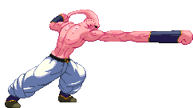
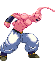

Meltreat
Or Melty Retreat. Buu's Backdash is unique in that he forms into a puddle and drops down while retreating,
then reforms back. It's quite nasty, honestly.


Meltdown
Buu turns into half-liquid goo and drops down into a puddle, during which his hitbox becomes very small,
and only low crouching kicks or dropping attacks will be able to connect with him. Hold Down to remain in Puddle Mode.
While still holding Down, you can press Forward or Backward to move yourself into that direction while remaining a blob.
Releasing Down at any time will have Buu reshaping into his humanoid form.

Meltdown Kick
Buu solidifies directly into a kicking attack to catch the enemy off-guard.
Once it hits, this kick can be cancelled into his Wake Up Call dash attack for a continued assault.


Elasti-Punch
By pressing forward and Medium Punch, Buu stretches his arm for a longer-reaching attack.

Elasti-Kick
By pressing forward and Medium Kick, Buu stretches his kicking leg out for a longer-reaching attack.

Reform Kick
While not very special in features, its crazy enough to include here. This move is
performed by starting out as a cartwheel, but halfway reshaping himself from an upside-down position into upright.
It's bonkers! It's a very good move though.
Axe Kick
A command attack that hits twice; once when Buu's leg goes up and once more as it comes back down.
Knocks the opponent away on the downward kick.
Bite!
Not your average crouching Medium Punch, Buu's version has him making a bit chomp!
Preferably to bite a bit of juicy thigh. It's got one stand-out feature; with proper timing, you're able to
EAT UP 1-hit projectiles (with some exceptions) that are being shot at you which also gives you a snippet of health back. Yum!

Antenna Whip (launches)
Main tool for launching the opponent, also works as an anti-air attack.

Aerial Elasti-Kick
By pressing forward and Medium Kick while jumping, Buu stretches his kicking leg out a bit farther.


Sleeping Fist
In a totally surprising form of attack, Buu instantly falls asleep in mid-air and falls to the ground,
hitting (and knocking down) the opponent with his entire body. If you hold Up while still airborne, Buu will slow down his falling momentum
and gracefully float down. Holding Down makes him descend a bit faster.
Buu then melts into a puddle as he hits the ground and instantly reforms.
Holding Down upon landing, Buu will remain in his Puddle Mode.
Wake Up Call
Buu's running attack which can cancel off his Focus Attack and his Meltdown Kick.


Blork! / Burp Blast
Buu's main energy projectile is a shoddy sphere that he belches out and which flies in an arc, hitting from above.
The Weak punch version has the least range, while the Strong punch version has the most. If the sphere hits the ground, it's destroyed.
The EX version is a bit different in that Buu will fire out three projectiles in one belch and they will bounce along the ground until they hit the opponent;
all good moves for zoning and keeping pressure on the opponent from afar.


Maniac Ball
Heavily based on the Wolf Cannon, Jon Talbain (from Darkstalker)'s Special Move.
Buu folds himself into a wrecking ball and flies across the screen! After hitting the opponent with it,
you're able to chase them with another swoop of the wrecking ball or move away for hit-and-run tactics.
When you swoop downward with the follow-up,
Buu can smash on the ground and immediately go into his Puddle Mode if you hold Down. Very versitile move.


Candy Beam
Buu shoots an electric current from his antenna that turns the opponent into a piece of candy upon contact with it.
The beam doesn't have a lot of range, has a bit of a start-up and is blockable. The opponent remains in this cursed state for a few seconds and is able to move around.
Buu can choose to grab and munch on the candy (move detailed below).


Eat You
Only useful after having turned the opponent into a candy with the Candy Beam.
Buu will attempt to grab the candy, and if he succeeds he'll put it in his mouth and munch on it,
sustaining damage to the opponent, then spitting it back out, reverting the opponent back to their regular form.
The opponent is able to mash buttons to try to escape Buu's mouth sooner, but Buu can mash buttons as well
to keep them in longer and thus doing more damage. Buu can regain a little bit of health the longer he's munching.

Pop Kick
A classic Buu move, he stomps the ground hard enough that his foot burrows through it
and then pops out of the ground a little distance in front of him, with the goal of hitting the opponent and kicking them into the air,
setting them up for a juggle combo. The spot where his leg re-emerges from the ground depends on the strenght of the kick button used;
Weak Kick is nearby (and best used in your chain combos) while Strong has the greatest range. Medium is inbetween.
Has no EX version.
Gum Header
For a set up move, Buu gets the Gum Header, in which he rips off his head (don't worry, he instantly regrows a new one)
and then tosses it onto the ground in a small puddle of Buu goo. Depending on the button strength used to activate the move,
after hitting the ground the goo moves either backwards (LP), stays in the center of the screen (MP) or moves to the far side of the screen (SP).
It will remain there, lurking. You can't throw out another one of these Gum Heads. However by repeating the same command, Buu will gesture the
Head to come back to him and it will fly towards him, biting along the way. The opponent can get hit by this biting head. The head can even absorb
a few hits when returning to Buu's call-back. Both the set-up and the call-back can be cancelled into from most basic attacks. Has no EX version.
Chaos Burst
Buu sees your shenanigans, he doesn't like them and as such has decided to blow himself up on contact. This counter can mean trouble if you are not careful.
It does only a tiny bit of damage, but at least you've gotten the opponent off you.

Taunt!
Buu's got not one, but FOUR taunts! While standing,
while crouching (Buu lies down flat on the ground, so it can be used to dodge attacks, mostly projectiles),
while jumping (this has a special feature the enables you to stay
in the air a little while longer as well as double-jump after the taunt ends)
and while in Puddle Mode.